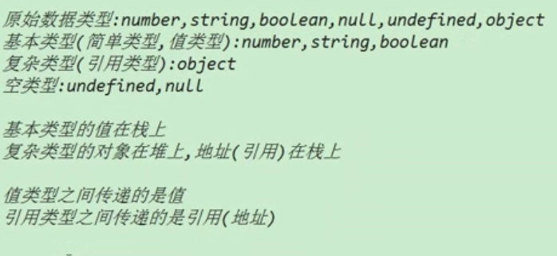
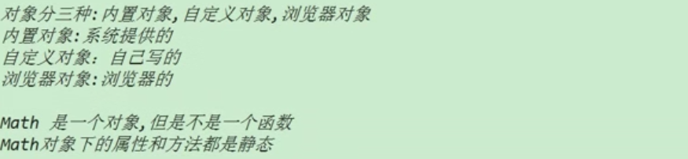

编程思想：
面向过程：凡事亲力亲为，所有事情的过程都要清楚，注重的是过程。
面向对象：提出需求，找到对象，对象解决这个问题，我们要结果，注重的是结果。
面向对象的特性：封装，继承，多态；
JS：
是一门解释性语言，是一门脚本语言，是一门弱类型语言，是一门基于对象的语言，是一门动态类型的语言。
对象：有属性和方法，具体特指某个事物。
对象：JS就是一组无序的属性的集合。
创建对象的方式：
1.通过调用系统的构造函数创建对象 new Object（）
var obj1= new Object（）；
2.自定义构造函数创建对象
var obj2 = new 自定义构造函数（）；
3.字面量的方式创建对象
var obj3 = {}
遍历对象：
for（var key in 对象）{
key----是一个变量，这个变量中存储的是遍历的对象存储的属性的名字
}

